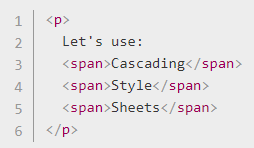
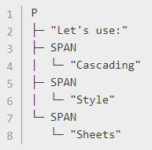

CSS is a language for specifying how a page page is presented.
A CSS document is usually a text file consisting of:
When the browser displays a document, it first combines all content from both the HTML and CSS documents into a
Document Object Model or 'DOM'. The browser then displays the contents of the DOM.
(Visual Example)
A DOM has a tree structure, where each element, attribute and text becomes a DOM Node. DOM Nodes have a parent/child relationship. Some elements are parents of 'child nodes', child nodes can hace 'sibling nodes'.
As an example:

...would be represented as:

...where the <p> element is the parent DOM node of the text and
<span> elements. The <span> elements are DOM note siblings along with the text, and the
<span> elements are also parent DOM nodes
of other text that are siblings.
An external stylesheet is usually a text file with a .css extension, referenced in a HTML file using the <link> element in the HTML header. Usually something like: <link rel="stylesheet" href="style.css">.
It is also possible for an internal stylesheet within the HTML file. Try to avoid this, but if required the CSS elements and properties would be contained within the <style> element contained within the html header.
Again, try to avoid, but it is also possible for inline styles that are contained within a "style" attribute within the element. This affects the one element only, and looks like: <h1 style="color:blue; border:solid black;">.
CSS consists of two key elements:
Comments can be added to CSS using /* to start and */ to end.
Some properties can be shorthand. For example, padding:
10px 15px 15px 5px is the same as:
padding-top: 10px
padding-right: 15px
padding-bottom: 15px
padding-left: 5px
...where the process is top, right, bottom, left. Remember: North, East,
South, West.
There are 6 key types of selector:
The simple selectors include:
Attribute selectors match elements based on specific attributes and the attribute values. The selector is housed within square brackets [ ], which contains the attribute name and optional condition to match. For example:
A pseduo-class is a keyword added to the end of a selector. This is to signify that the style should only apply to the element when the element is in a certain state. For example, only styling an element if mouseovered, or a check box when enabled or disabled. The pseudo-class keyword is preceded with a :. There is a set list available online.
For example: a:hover selector would apply the style when the a link is hovered over.
Pseudo-elements are like pseudo-classes, but with key differences. They can be added to the end of selectors to select a certain part of the element. They are keywords frocessed with ::. For example, you could apply the following pseudo-element on the href element to say add an arrow after the http: [href^=http]::after { }.
CSS electors can be combined in various ways.
{kind=link}